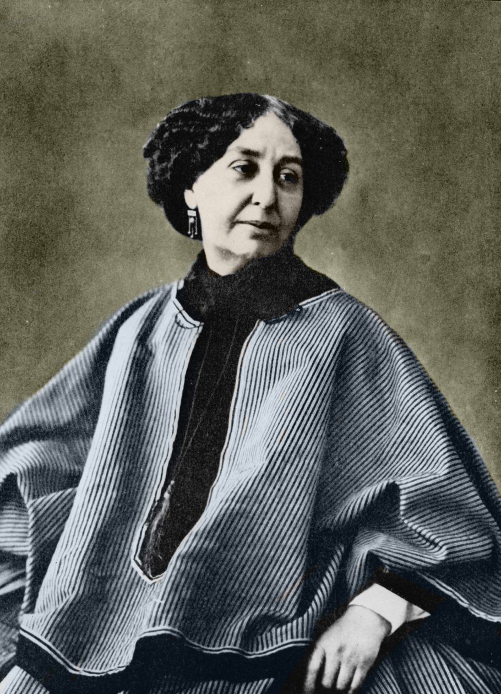
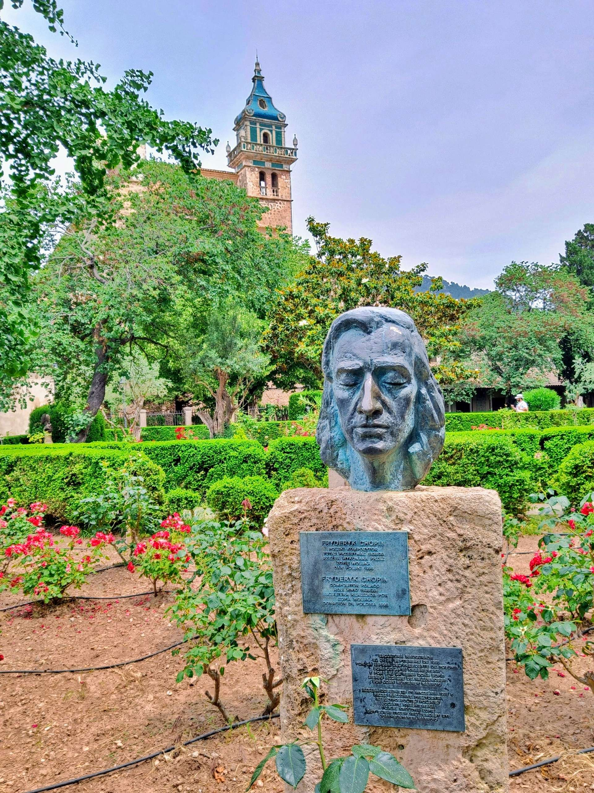

One of the most significant relationships in Chopin’s life was with the French novelist Aurore Dupin, better known by her pen name George Sand. They met in Paris in 1836 and became romantically involved in 1838. Their partnership lasted almost a decade and had a profound influence on Chopin’s emotional life and creative output. Although the relationship was often turbulent, Sand provided him with stability, companionship, and care during periods of illness. Many of Chopin’s friends were skeptical of their union, but despite the controversies, Sand played an essential role in his later years.
In the winter of 1838–1839, Chopin traveled with George Sand and her children to the island of Mallorca, seeking a milder climate for his health. They stayed in a former Carthusian monastery in Valldemossa. Although the visit was marked by difficulties, including poor weather, inadequate living conditions, and hostility from locals who feared tuberculosis, it was one of Chopin’s most productive periods of composition. During this time he worked on his famous 24 Preludes, Op. 28, among other pieces. The contrast between the beauty of the island and his fragile health added depth and intensity to his music from this period.

Chopin was known for his delicate and intimate style of performance, often preferring small salons to large concert halls. Unlike many virtuosos of his time, he gave only about thirty public concerts in his entire career, relying instead on teaching and publishing for income. He was admired by fellow composers such as Franz Liszt and Robert Schumann, the latter describing him as a “musical genius.” Chopin’s heart, in accordance with his wishes, was preserved after his death and rests in the Holy Cross Church in Warsaw, while his body was buried in Père Lachaise Cemetery in Paris. His dual legacy as both a Polish national symbol and a cosmopolitan artist continues to inspire musicians and audiences worldwide.